자연생태복원기사(구) (2015-08-16 기출문제)
1과목: 환경생태학개론
1. 개체군의 분산형태 중 균일형(uniform distribution)에 적합한 것은?
- 자연상태에서 많이 나타나는 현상
- 전 지역을 통하여 환경조건이 균일하고 개체간에 치열한 경쟁
- 생존경쟁이 치열하지 않고 환경조건이 균일하지 않은 곳
- 환경이 고르지 못하고 생식이나 먹이를 구하는 개체군
(정답률: 72%)

2. 다음 중 오니(汚泥)는 폐수처리장에서 1차 침전조 및 2차 침전조에서 생성되는데 그 처리공정으로 적합한 것은?
- 농축 → 개량 → 탈수 → 건조 → 소각, 매립, 퇴비화 등 최종처분
- 탈수 → 농축 → 건조 → 개량 → 소각, 매립, 퇴비화 등 최종처분
- 개량 → 농축 → 탈수 → 건조 → 소각, 매립, 퇴비화 등 최종처분
- 건조 → 농축 → 개량 → 진공 → 소각, 매립, 퇴비화 등 최종처분
(정답률: 59%)
3. 다음 설명하는 현상을 무엇이라 하는가?
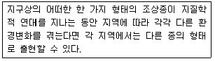
- 적응
- 진화
- 증식
- 종분화
(정답률: 65%)
4. 생물다양성의 직접적인 가치로서 적당하지 않은 것은?
- 예술 활동의 대상으로서 예술적 가치
- 공기정화, 산소공급, 영양물질 순환과 같은 생태적 가치
- 의약품, 식량, 신물질 개발, 에너지원으로 이용가능한 직접적 실용가치
- 생물 스스로의 생존 권리와 인간이 생물을 멸종시킬 권리가 있느냐 하는 윤리적 혹은 생물 고유의 본질적 가치
(정답률: 67%)
5. 수계생태계를 이루고 있는 생물적 부분을 생활형에 따라 구분한 것으로 해당하지 않는 것은?
- 부유생물
- 척추동물
- 유영동물
- 저서생물
(정답률: 81%)
6. 스트레스에 대해 식물생태계 및 다양성은 여러 가지 징후를 보인다. 아래의 항목 중 식물 생태계가 나타내는 징후를 모두 올바르게 선택한 것은?
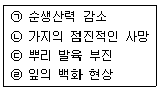
- ㉠, ㉡
- ㉢, ㉣
- ㉠, ㉡, ㉣
- ㉠, ㉡, ㉢, ㉣
(정답률: 75%)
7. 다음 중 생물의 계절 변화에 대한 과학적 연구인 화력학(phenology)에 대한 설명으로 맞지 않는 것은?
- 화력학은 생물기후학이라고도 한다.
- 종의 분포를 결정하는 기능적 제한요인이다.
- 봄꽃식물은 남사면 같은 미소서식지에서 먼저 개화한다.
- 북반구 Hopkins법칙에 의하면 위도 1°씩 북쪽으로 갈수록 봄은 약 4일 늦게 오는데, 봄은 하루에 약 27km씩 북상한다.
(정답률: 50%)
8. 다음 중 강(river), 인공호(reservoir), 자연호수(lake) 생태계의 특성들이 틀린 것은? (단, 인공호는 강과 자연호수에 비해 상대적으로 중간적 위치를 점유하고 있으며, 그에 따른 특성을 나타냄)
- 유역형상은 강(river)이 길쭉하고 수로화 되어있다.
- 세척률(flushing rake)은 (lake)가 가장 빠르다.
- 영양물질 공급형태가 자연호(lake)는 순환한다.
- 공간적 구조는 인공호(reservoir)에서는 정적인 구배와 수직적 구배가 모두 나타난다.
(정답률: 70%)
9. 수서곤충을 비롯한 저서성 무척추동물군의 군집변화를 계량화하여 분석하는 방법에는 군집지수와 생물지수가 있다. 다음 중 생물지수의 특징에 해당하는 것은?
- 생물지수는 단순하다.
- 생물지수는 객관적이다.
- 생물지수는 전통적 방법이다.
- 생물지수는 가중치를 부여한다.
(정답률: 71%)
10. 미생물을 플라스크 또는 회분식(Batch culture)으로 배양하면 성장곡선이 다음과 같다. 미생물이 새로운 환경에 적응하기 위해 준비하는 단계는?(오류 신고가 접수된 문제입니다. 반드시 정답과 해설을 확인하시기 바랍니다.)
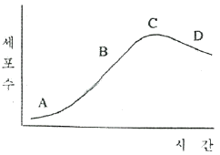
- A
- B
- C
- D
(정답률: 48%)
11. 어린 개체가 많은 집단으로 장차 개체군이 커질 수 있는 개체군 연령 분포형태는?
- 쇠퇴형
- 안정형
- 발전형
- 표주박형
(정답률: 75%)
12. 다음 2개의 그림은 온대 호수의 계절 양상을 나타낸 것이다. 위, 아래 그림의 계절을 순서대로 바르게 나열한 것은?
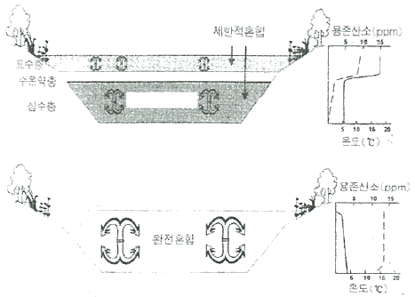
- 봄, 가을
- 가을, 봄
- 겨울, 여름
- 여름, 겨울
(정답률: 63%)
13. 다음 중 산성강하물에 관한 설명으로 잘못된 것은?
- 우리나라 산성비의 pH는 5.6 미만이다.
- 산성안개(acid fog)보다 산성비가 일반적으로 더욱 산성화된 경향을 띤다.
- 습성강하물(wet deposition)과 건성강하물(dry deposition)로 나뉠 수 있다.
- 공업화가 일찍부터 이루어져왔던 지역에서 산성강하물에 의한 피해가 높은 경향을 보인다.
(정답률: 68%)
14. 다음 표는 초원, 성숙림의 연간생산량 및 호흡량이다. 빈 칸의 적정한 값은?
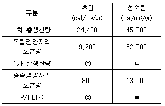
- ㉠:15,200 ㉡:13,000 ㉢:2.4 ㉣:1
- ㉠:14,400 ㉡:32,000 ㉢:2.4 ㉣:1.4
- ㉠:15,200 ㉡:13,000 ㉢:2.7 ㉣:1
- ㉠:14,400 ㉡:32,000 ㉢:2.7 ㉣:1.4
(정답률: 54%)
15. Sample A에서 16종이 조사되었고 Sample B에서 18종이 조사되었으며 Sample A와 Sample B에 포함된 공통종수가 5종이라고 할 때 Sample A와 Sample B 사이에 유사성 지수는 얼마인가?
- 0.147
- 0.197
- 0.244
- 0.294
(정답률: 51%)
16. 환경정책기본법 시행령에 따른 해역의 생활환경기준 중 수소이온 농도(pH)의 범위에 포함되지 않는 것은?
- 6.5~7.0
- 7.0~7.8
- 7.8~8.5
- 8.5~9.0
(정답률: 78%)
17. 호소의 중심부로부터 육상까지 일정한 경사를 가진 경우에 형성되는 식생이 아닌 것은?
- 정수식생
- 부유식생
- 부엽식생
- 해안식생
(정답률: 71%)
18. 물속의 칼슘이나 마그네슘 등을 제거하기 위해 사용되는 인산을 함유한 첨가제를 무엇이라고 하는가?
- 연수제(軟水劑)
- 산화제(酸化劑)
- 환원제(還元劑)
- 첨가제(添加劑)
(정답률: 67%)
19. 복원의 실제 적용에서 고려해야 할 다음 사항은 무엇에 대한 내용인가?
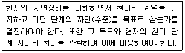
- 기질이 준비
- 생문군집의 도입
- 시간차원에서의 자연복원 검토
- 경관차원의 복원을 위한 환경계획
(정답률: 67%)
20. 국제자연 보전연맹(IUCN)은 생물다양성의 보호를 위하여 보호구역의 명칭, 정의, 유형을 분류 하였는데 이에 해당되지 않는 것은?
- 야생원시지역(widness Area)
- 국립공원(National park)
- 육상 및 해양경관 보호구역(Protected Landscape/seascape)
- 생태관광지역(Ecotourism Area)
(정답률: 60%)
2과목: 환경계획학
21. 다음 중 보전을 필요로 하는 지역ㆍ지구 계획으로 옳지 않은 것은?
- 면적이 같을 경우에는 숫자가 작은 것이 더 낫다.
- 서로 멀리 떨어져 있는 경우보다 보존지역들이 서로 가까이 있는 경우가 더 낫다
- 자연적 연결성 즉 이용 가능한 통로들을 유지하는 것이 훨씬 더 좋은 대안이다.
- 투과성이 있는 가장자리는 자연보전지구의 경계를 지나는 동물의 이동을 촉진한다.
(정답률: 68%)
22. 자연환경보전법상 생태계보전협력금은 50억원의 범위 안에서 생태계의 훼손면적에 단위면적당 부과금액과 지역계수를 곱하여 산정ㆍ부과한다. 다음 중 규정에 따른 생태계보전협력금의 단위면적당 부과금액(원/m2)은?
- 100원
- 200원
- 250원
- 300원
(정답률: 57%)
23. 중앙행정기관의 장 또는 지방자치단체의 장은 용도지역ㆍ용도지구ㆍ용도구역의 지정 또는 변경에 대한 도시ㆍ군관리계획의 결정을 의제하는 계획을 허가ㆍ인가ㆍ승인 또는 경정하고자 하는 경우 중앙도시계획위원회 또는 지방도시계획위원회의 심의를 받아야 하는 경우가 아닌 것은?
- 도시ㆍ군관리계획의 결정을 의제하는 계획에서 그 계획 면적의 5퍼센트 미만을 변경하는 경우
- 중앙행정기관의 장이 30만제곱미터의 용도지역의 지정에 대한 도시ㆍ군관리계획의 결정을 의제하는 계획을 허가하고자 하는 경우
- 지방자치단체의 장이 5제곱킬로미터의 용도구역의 변경에 대한 도시ㆍ군관리계획의 결정을 의제하는 계획을 승인하고자 하는 경우
- 지방자치단체의 장이 50만제곱미터의 용도지구의 변경에 대한 도시ㆍ군관리계획의 결정을 의제하는 계획을 결정하고자 하는 경우
(정답률: 55%)
24. 「환경영향평가법」에 따른 전략환경영향평가 평가준비서에 포함되지 않는 것은?
- 대상 지역의 투자계획 및 재원조달방안
- 전략환경영향평가 대상계획의 목적 및 개요
- 구체적인 입지가 있는 경우 토지이용구상안
- 대상계획이 실시되는 지역 및 그 주변지역에 대한 환경현황을 포함한 지역 개황(槪況)
(정답률: 48%)
25. 다음 중 환경계획단계의 내용으로 적합하지 않은 것은?
- 자연생태계 보전
- 자원 및 에너지절약
- 수자원 및 수질, 용수공급 및 처리
- 환경정보시스템, 환경정보 공개
(정답률: 43%)
26. 환경교육의 특성 설명으로 틀린 것은?
- 환경교육은 종합적이고 학제적인 접근을 필요로 한다.
- 환경교육은 생활화를 통한 실천성이 강조되어야 한다.
- 환경교육은 학교 교육만을 중심으로 이루어져야 한다.
- 환경교육은 계속적으로 이어지는 연속적이어야 한다.
(정답률: 71%)
27. 하천정비에서 고려할 환경적 문제점으로 틀린 것은?
- 무분별한 하천정비로 습지대가 감소한다.
- 육수생태계의 다양성에 치명적인 인위적 훼손을 야기 시킨다.
- 하천생태계의 다양성이나 사업계획의 타당성이 철저히 검증되지 못하고 있다.
- 재난방지와 치수기능을 강화시키기 위한 하천의 정비로 인해 경관의 다양성을 증가시켰다.
(정답률: 69%)
28. 생태공원 조성 이론의 설명으로 옳은 것은?
- 생물다양성은 유전자, 종, 소생물권 등의 다양성을 의미하여 생물학적 다양성과 생태적 안정성은 반비례한다.
- 생태적 건전성은 생태계 내 자체 생산성을 유지함으로써 건전성이 확보되며, 일시적으로 생물자원 이용이 가능하다.
- 지속가능성은 생물자원을 지속적으로 보전, 재생하여 생태적으로 연속성을 유지한다.
- 최소의 에너지 투입은 자연 순환계를 형성하여 에너지 자원 인력을 절감하고 경제성 효율을 극대화할 수 있도록 계획하여 인위적인 에너지 투입을 최대화하도록 한다.
(정답률: 50%)
29. OECD의 환경지표 설정을 위한 PSR구조에서 대응(response)에 해당되는 것은?
- 에너지, 운송, 제조업
- 행정, 기업, 국제사회
- 대기, 토양, 자연자원
- 학교, 민간단체, 군대
(정답률: 67%)
30. 자연공원의 용도지구에 해당하지 않는 지구는?
- 공원자연보존지구
- 공원자연환경지구
- 공원문화유산지구
- 자연생태보전지구
(정답률: 47%)
31. 다음 중 생태ㆍ자연도의 작성에 관한 설명으로 ()안에 적합한 것은?
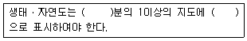
- 5000, 실선
- 10000, 점선
- 25000, 실선
- 50000, 점선
(정답률: 72%)
32. 다음 설명과 관련된 협약은?
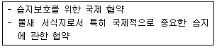
- 람사협약
- 몬트리올협약
- 나이로비협약
- 리우협약
(정답률: 70%)
33. 국토종합계획에 대한 설명으로 틀린 것은?
- 10년을 단위로 계획을 수립한다.
- 토지이용에 관한 모든 계획의 상위계획이다.
- 국토의 공간구조의 정비 및 지역별 기능 분담 방향에 관한 사항을 포함한다.
- 국토 전역을 대상으로 하여 국토의 장기적인 발전 방향을 제시한다.
(정답률: 70%)
34. 자연입지적 토지이용 유형별 기본방향의 내용설명으로 적합하지 않은 것은?
- 산림ㆍ계곡환경 - 보전중심의 경관 관리
- 하천ㆍ호수환경 - 수경관 중심의 대규모 관광 및 상업지역 조성
- 역사ㆍ문화환경 - 연사ㆍ문화 경관자원과 조화된 경관형성
- 해안환경 - 자연환경오염의 최소화 및 공공기반 시설의 확충
(정답률: 69%)
35. 다음 중 리모트 센싱(Remote sensing)을 이용한 경관특성 분석의 장점을 기술한 것과 가장 거리가 먼 것은?
- 일정지역의 서로 다른 경관유형의 파악이 가능하다.
- 산림 경관에서 수목의 활력도, 수관 및 잎의 변화 등을 파악하는데 용이하다.
- 분광특성을 통해 경관 구조를 정량적으로 파악하는데 용이하다.
- 지하수위의 변화에 대한 정보를 구체적으로 제시해 줄 수 있다.
(정답률: 62%)
36. 다음 [보기]의 설명에 해당하는 계획은?
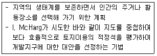
- 심미적환경계획
- 생태환경계획
- 환경자원관리계획
- 광역환경관리계획
(정답률: 56%)
37. 한반도의 생태축은 田자형으로 구성되어 있다. 다음 중 한반도의 생태축에 해당하지 않은 경우는?
- 백두대간 생태축
- 한강 생태축
- 남해안 도서보전축
- 남북접경지역 생태보전축
(정답률: 57%)
38. 국토계획평가의 국토계획평가 요청서의 제출시기가 틀린 것은?
- 「국토기본법」에 따라 국토교통부장관이 도종합계획을 승인하기 전 관계
- 「수도권정비계획법」에 따라 국토교통부장관이 수도권정비계획안을 수도권정비위원회에 상정한 후
- 「국토의 계획 및 이용에 관한 법률」에 따라 국토교통부장관이 관계 중앙행정기관의 장과 협의할 때 또는 도지사가 관계 행정기관의장과 협의할 때
- 「지역균형개발 및 지방중소기업 육성에 관한 법률」에 따라 국토교통부장관이 관계중앙행정기관의 장과 협의할 때
(정답률: 39%)
39. 자연환경보전계획의 목표 및 추진과제로서 자연환경 관리기반 구축의 중점과제와 거리가 먼 것은?
- 전국토 생태네트워크 구축
- 법령ㆍ제도 등 관리체계 정비
- 자연환경조사 및 정보체계 구축
- 자연환경보전 업무능력 향상
(정답률: 30%)
40. 다음 중 하천의 기능으로 모두 알맞은 것은?
- 치수기능, 지원기능, 보호기능
- 정화기능, 친수기능, 배수기능
- 이수기능, 친수기능, 환경기능
- 친수기능, 자정기능, 발전기능
(정답률: 54%)
3과목: 생태복원공학
41. 다음 중 토양에 대한 설명으로 틀린 것은?
- 토양구조는 크기, 형상, 치밀도 등에 근거하여 구분된다.
- 토양공극은 토양의 투수성, 뿌리의 신장 등과 관계가 있다.
- 토성이란 직경 0.2mm 이하인 토양입자의 입경조성을 말하는 것이다.
- 토양색은 빛의 강도ㆍ수분함량ㆍ유기물함량과 토양에 존재하는 철(Fe)과 망간이온의 산화환원상태 등에 의해 결정된다.
(정답률: 65%)
42. 토양 화학성을 나타내는 지표에 대한 설명 중 틀린 것은?
- 비료의 3대 요소는 N, P, K 이다.
- 양이온교환용량은 토양의 보비력 혹은 완충능력의 지표가 된다.
- 토양입자의 표면은 음전하(-)로 되어 있고 양이온을 흡착하고 있다.
- 양이온교환용량(CEC)이 큰 토양일수록 토양 pH 변동을 작게 하는 완충능력이 작다.
(정답률: 60%)
43. 지형복원을 위해 다져진 10,000m3의 흙을 성토할 경우 운반할 토량은 약 얼마인가? (단, 토량변화율 L=1.2, C=0.8 이다.)
- 7,000m3
- 8,000m3
- 15,000m3
- 16,000m3
(정답률: 54%)
44. 생태복원 시 식재할 수 있는 질소고정 식물로만 구성된 것은?
- 개나리, 이팝나무, 보리수나무
- 개나리, 조팝나무, 삼나무
- 보리수나무, 자귀나무, 다릅나무
- 낙상홍, 주엽나무, 피나무
(정답률: 54%)
45. 다음 중 생태복원에 응용할 수 있는 생태기능의 원리에 대한 설명으로 맞는 것은?
- 물질은 순환하지만 에너지는 일방향으로 흐른다.
- 에너지는 전이과정에서 유용한 형태로 변형된다.
- 야생동물종은 한 서식처에서 다른 서식처로 이동하나 식물종의 대부분은 이동하지 않는다.
- 물질은 전이과정에서 다른 형태로 변형될 뿐 생성 또는 소멸되지 않으나 에너지 전이는 생성과 소멸을 반복한다.
(정답률: 48%)
46. 반딧불이 서식환경조성의 주안점으로 가장 우선시 되는 것은?
- 반딧불이 서식지의 이해
- 조성 대상지 환경의 이해
- 반딧불이 종류별 생활사의 이해
- 반딧불이 관련한 먹이사슬의 이해
(정답률: 44%)
47. 다음 중 내충성이 강한 수종에 해당되지 않는 것은?
- 느티나무
- 아까시나무
- 밤나무
- 떡갈나무
(정답률: 42%)
48. 조류와 인간의 거리 중에서 인간이 접근하면 수십 cm에서 수 m를 걸어 다니면서 인간과의 일정한 거리를 유지하려고 하는 거리는?
- 비간섭거리
- 경계거리
- 회피거리
- 도피거리
(정답률: 47%)
49. 비탈면의 식물생육적합도 판정기준 중 아래의 설명에 해당하는 비탈면의 토양경도는 얼마 이상인가?
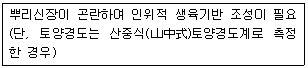
- 약 5mm
- 약 10mm
- 약 20mm
- 약 30mm
(정답률: 53%)
50. 생태복원사업시 시공 후 관리방법 중 가장 합리적인 방법은?
- 운영관리
- 순응관리
- 적응관리
- 하자관리
(정답률: 38%)
51. 다음의 습지식물 중 침수(侵水) 식물종은?
- 개구리밥(Spirosdela polyrhiza)
- 골풀(Juncus effusus var. decipiens)
- 부들(Typha orientalis)
- 물수세미(Myriophyllum uerticillatum)
(정답률: 65%)
52. 토양에 서식하는 생물 중 토양생성에 중요한 역할을 하는 생물은?
- 거미
- 지렁이
- 메뚜기
- 달팽이
(정답률: 75%)
53. 다음 중 토양의 불량요인에 따른 보완대책에 대한 설명으로 틀린 것은?
- 고결 : 경운이나 객토에 의한 개량 등
- 배수불량 : 배수, 경운, 개량재 혼합, 개량재 층상 부설 등
- 통기ㆍ투수불량 : 개량재, 유효토심을 두껍게 하고, 멀칭실시
- pH의 부적합 : 객토, 중화, 개량재 혼합 등
(정답률: 65%)
54. 구조물의 자중을 증대시키는 결함을 개선함과 동시에 우수한 성능을 부여할 목적으로 사용되는 경량콘크리트의 기건단위용적질량(t/m3)은 얼마 이하인가?
- 1.5
- 2.0
- 2.5
- 3.0
(정답률: 40%)
55. 다음 중 조류의 식이식물로 도입하기 가장 부적합한 수종은?
- 느티나무(Zelkoua serrata)
- 팽나무(Celtis sinensis)
- 쉬나무(Euosia daniellii)
- 멀구슬나무(Melia azedarach)
(정답률: 48%)
56. 이식할 수목의 뿌리돌림을 사전에 실시하는 근본적인 목적은?
- 운반 중량을 감소시키기 위해
- 이식구덩이 크기를 축소하기 위해
- 이식을 위한 굴취를 쉽게 하기 위해
- 이식력이 약한 수목을 이식하기 위해
(정답률: 62%)
57. 생태복원 관련한 공사의 순공사원가 계산을 구성하는 3가지 비목으로만 구성된 것은?
- 재료비, 일반관리비, 이윤
- 재료비, 일반관리비, 경비
- 재료비, 노무비, 이윤
- 재료비, 노무비, 경비
(정답률: 52%)
58. 비오톱(biotope)에 대한 정의로 바람직한 것은?
- 생물이 생존할 수 있는 서식지 환경을 성질이나 상태에 의해 분류한 지역
- 생태학에서 생물의 개체 또는 개체군이 살고 있는 장소
- 자연의 원래 상태를 인식하기 위해 이들 상호간의 관계를 지닌 생물과 무기적 환경을 하나로 통합한 개념
- 특정 지역에 존재하는 모든 생물과 비생물환경으로 구성되는 생태적 계역
(정답률: 33%)
59. 식재기반의 토양에 대한 설명 중 틀린 것은?
- 전기전도도는 토양에 포함된 염류농도의 지표로 농도장해의 유무판정에 쓰인다.
- 전기전도도는 심토에서는 낮은 수치가 보통이고, 측정치가 1.0 mS/cm 이하가 되면 농도장해를 일으킬 위험성이 높다.
- 토양내 전질소란 토양속의 유기질 질소와 무기질 질소의 총량으로서 전질소정량법 또는 CN코다로 특정되며 0.06% 이상이 바람직하다.
- 전(全)탄소량을 튜링(Tyurin)법 또는 CN코다 등으로 측정하여 계수 1.724를 곱한 수치를 부식함량이라고 하며 부식함량은 3% 이상인 것이 바람직하다.
(정답률: 50%)
60. 굵은 골재의 최대치수, 잔공재율, 잔골재의 입도, 반죽질기 등에 따르는 마무리하기 쉬운 정도를 나타내는 것으로서 굳지 않은 콘크리트의 성질을 무엇이라 하는가?
- 성형성(plasticity)
- 반죽질기(consistency)
- 워커빌리티(workability)
- 피니셔빌리티(finishability)
(정답률: 53%)
4과목: 경관생태학
61. 경관 파편화의 정도를 측정할 때 고려하지 않는 것은?
- 파편화된 패치의 색상
- 파편화된 패치의 면적
- 파편화된 패치의 이격거리
- 파편화된 패치의 배열
(정답률: 64%)
62. 지난 반세기 동안 네덜란드 북해 연안과 더불어 우리나라의 서해안에서 가장 활발하게 일어났던 훼손으로, 인위적으로 해안경관을 변화시켜 친환경적이지 못하며 자연적인 해안경관을 해치게 된 것은?
- 쓰레기 투기
- 해상 유류 유출 사고
- 간척 및 매립
- 연안의 수많은 양식시설
(정답률: 62%)
63. 개발사업시 동ㆍ식물상 분야에 대한 환경영향평가의 가장 근본적인 목적은?
- 미적 경관 향상
- 생물 다양성 보전
- 특정 개체수의 증가
- 문화경관 다양성 향성
(정답률: 72%)
64. 생태축의 기능에 대한 설명으로 틀린 것은?
- 종의 고립 증대
- 도시 미기후의 조절
- 유전자 풀(pool)의 유지와 근교약세의 방지
- 생태계의 연결을 통해 생물 이동의 증진
(정답률: 66%)
65. 서식처 면적의 관점에서의 종 다양성과 이질성을 나타내는 그래프는?
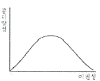
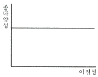
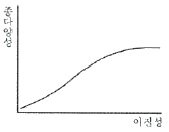
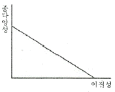
(정답률: 57%)
66. 옥상녹화(생태계) 조성 효과로 틀린 것은?
- 옥상 녹음을 통한 열섬효과 완화
- 도시 내 우수유출 지연 및 홍수 완화
- 옥상녹화를 통한 외래종 확산 방지
- 도시 내 녹지 조성을 통한 경관 향상
(정답률: 65%)
67. 국가적인 차원에서 구성하는 국토생태네트워크 중 백두대간, 국립공원, 4대강, 서남해안, 비무장지대 등 국가적으로 중요한 생태계는 다음 어느 권역에 해당하는가?
- 핵심생태지역
- 생태통로지역
- 생태복원지역
- 접경지역생물권보전지역
(정답률: 67%)
68. 비오톱 유형분류에 필요한 기초 자료의 종류를 가장 바르게 나열한 것은?
- 토지이용형태도면, 수질도면, 토양도면
- 식생도면, 항공사진, 교통지도
- 지형도면, 항공사진, 식생도면
- 항공사진, 지적도, 인구분포도면
(정답률: 71%)
69. 도시생태계가 갖는 독특한 특성이 아닌 것은?
- 태양에너지 이외에 화석과 원자력에너지를 도입하여야 하는 종속영양계이다.
- 외부로부터 다량의 물질과 에너지를 도입하여 생산품과 폐기물을 생산하는 인공생태계이다.
- 도시개발에 의한 단절로 인하여 생물다양선의 저하가 초래되어 생태계 구성요소가 적은 편이다.
- 모든 구성원 사이의 자연스러운 상호관계가 일어난다.
(정답률: 68%)
70. 원격탐사(Remote Sensing, RS)에 대한 설명으로 틀린 것은?
- 모든 식생이나 식생 상태의 분광특성은 항상 동일하다.
- 우리나라는 자체 자원탐사를 위한 인공위성을 운영하고 있다.
- 광역성, 동시성, 주기성, 전자파 이용 등의 특징을 가지고 있다.
- 대상물체의 특성에 따른 반사 또는 방사된 에너지를 감지해서 정보를 수집하는 기술이다.
(정답률: 71%)
71. 특정 목적을 가지고 실세계로부터 공간자료를 추출하여 이를 변환하여 보여주거나 분석하는 강력한 도구로 하드웨어, 소프트웨어, 공간자료, 인력 등의 조합을 의미하는 것은?
- 원격탐사
- 측량
- 지리정보시스템
- 범지구측위시스템
(정답률: 64%)
72. 인위적 교란을 지속적으로 받고 있는 농촌경관의 경관생태학적인 복원 및 보전을 위해 반드시 고려되고 반영되어야 할 요소가 아닌 것은?
- 경작지
- 묘지
- 2차 식생
- 주택
(정답률: 50%)
73. 육교형 야생동물 이동통로로 조성 시 중점 고려항목으로 가장 거리가 먼 것은?
- 다양한 편익시설물의 설치
- 유도식재용 생울타리 조성
- 소규모 은신처 조성
- 차광식재 또는 차광벽 설치
(정답률: 65%)
74. 하나의 큰 패치(Single Large Patch)가 가지는 특징으로 틀린 것은?
- 번식률이 증가하며 질병이 퍼지더라도 비교적 제거가 쉽다.
- 가장자리 효과가 상대적으로 적으며 서식처의 다양성이 크다.
- 식물이 열매를 맺는 비율이 상승한다.
- 종 풍부성, 다양성, 개체수가 높다.
(정답률: 55%)
75. 다음 그림에서 나타내고 있는 생태네트워크의 개념 및 생태네트워크의 특징 설명이 옳지 않은 것은?
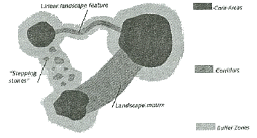
- 생태네트워크는 야생생물을 보호하기 위하여 지역생태계 관점에서 이루어지고 있다.
- 기존의 서식공간만을 보전하여 생물들의 서식공간을 충분히 확보하도록 하고 있다.
- 공간구성을 크게 핵심지역, 완충지역, 코리더, stepping stone(징검다리 녹지)로 구분하고 있다.
- 생태네트워크는 산림으로부터 초원ㆍ습지, 하천과 크고 작은 면적인 선 등 개개의 동식물 생태를 포함하고 있다.
(정답률: 61%)
76. 경관모자이크 특징을 정량적으로 기술하는 지수들의 유형이 아닌 것은?
- 다양성
- 풍부도
- 생태적 지위
- 균등도
(정답률: 53%)
77. 동물의 행동권 이동(home range movement)을 가장 올바르게 설명하고 있는 것은?
- 먹이를 얻기 위해 하루 정도의 기간 내에 상당히 안정된 공간에서 움직이는 것
- 일방적으로 움직이는 것
- 계절적이고 주기적으로 움직이는 것
- 정상적인 상황에서는 일어나지 않는 불규칙한 이동
(정답률: 64%)
78. 토지개발에 따른 경관변화 형태와 관계가 먼 것은?
- 파편화
- 축소
- 천공화
- 확대
(정답률: 60%)
79. 도시 비오톱 지도의 활용적 가치에 대한 설명으로 옳지 않은 것은?
- 친환경적 도시 및 녹지계획 수립을 위한 중요한 기초자료를 제공한다.
- 보전공간 설정을 위한 기초자료를 제공한다.
- 희귀 비오톱 유형의 종류 및 분포를 파악할 수 있다.
- 추가적 비오톱 조성위치의 파악은 불가능하다.
(정답률: 68%)
80. 다음 중 ()안에 들어갈 설명으로 가장 적당한 것은?
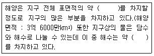
- 50%, 50%
- 60%, 79%
- 60%, 86%
- 71%, 99%
(정답률: 69%)
5과목: 자연환경관계법규
81. 독도 등 도서지역의 생태계 보전에 관한 특별법상 특정도서에서 행위제한 요소로 옳은 것은?
- 군사ㆍ항해ㆍ조난구호 행위
- 국가가 시행하는 해양자원개발 행위
- 개간, 매립, 준설 또는 간척 행위
- 천재지변 등 재해의 발생 방지 및 대응을 위하여 필요한 행위
(정답률: 68%)
82. 국토기본법상 국토계획에 포함되지 않는 것은?
- 국토종합계획
- 도서종합계획
- 부문별계획
- 시ㆍ군종합계획
(정답률: 56%)
83. 자연환경보전법상 생태ㆍ경관보전지역에서의 행위제한에 해당되지 않는 경우는?
- 토석의 채취
- 하천ㆍ호소 등의 구조를 변경하거나 수위 또는 수량에 증감을 가져오는 행위
- 핵심구역안에서 야생동ㆍ식물을 포획ㆍ채취ㆍ이식ㆍ훼손하거나 고사시키는 행위
- 생태ㆍ경관보전지역 안에 거주하는 주민의 생활양식의 유지 또는 생활향상을 위하여 필요한 영농 행위
(정답률: 62%)
84. 백두대간 보호에 관한 법률상 보호지역 중 완충구역에서 허용되지 않는 행위를 한 자에 대한 벌칙기준으로 옳은 것은?
- 7년 이하의 징역 또는 5천만원 이하의 벌금
- 5년 이하의 징역 또는 3천만원 이하의 벌금
- 3년 이하의 징역 또는 1천5백만원 이하의 벌금
- 1년 이하의 징역 또는 1천만원 이하의 벌금
(정답률: 66%)
85. 생물다양성 보전 및 이용에 관한 법률 시행령에 의한 생물다양성관리계약에 따른 실비보상 산정기준이 아닌 것은?
- 습지 등을 조성하는 경우
- 휴경 등으로 수확이 불가능하게 된 경우
- 경작방식의 변경 등으로 수확량이 감소하게 된 경우
- 장마, 냉해 등 자연재해에 의하여 농작물 수확량이 감소하게 된 경우
(정답률: 51%)
86. 자연공원법상 용도지구 중 공원자연보존지구의 완충공간(緩衝空間)으로 보전할 필요가 있는 지역은?
- 공원자연완충지구
- 공원자연환경지구
- 공원완충보전지구
- 공원완충시설지구
(정답률: 40%)
87. 농지법상 용어의 뜻이다. ()안에 알맞은 것은?
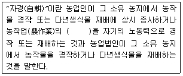
- 2분의 1이상
- 4분의 1이상
- 10분의 1이상
- 20분의 1이상
(정답률: 50%)
88. 국토의 계획 및 이용에 관한 법률상 도시지역 내 각 지역별 용적률의 최대한도로 옳은 것은?
- 주거지역 : 20퍼센트 이하
- 상업지역 : 1천퍼센트 이하
- 공업지역 : 250퍼센트 이하
- 녹지지역 : 100퍼센트 이하
(정답률: 60%)
89. 국토의 계획 및 이용에 관한 법률상 토지의 이용실태 및 특성, 장래의 토지 이용 방향 등을 고려하여 국토를 구분할 때 그 용도지역을 가장 적합하게 구분한 것은?
- 도시지역, 관리지역, 농림지역, 자연환경보전지역
- 도시지역, 준농림지역, 농림지역, 자연환경보전지역
- 도시지역, 농림지역, 자연환경보전지역, 녹지지역
- 보전지역, 관리지역, 준농림지역, 준도시지역
(정답률: 62%)
90. 자연환경보전법상 자연경관영향의 협의대상이 되는 거리의 일반기준에서 경계로부터의 거리가 옳은 것은?
- 자연공원(최고봉 1200m 이상) : 1500m
- 생태ㆍ경관보전지역(최고본 700m 이상) : 1000m
- 자연공원(최고본 700m 미만 또는 해상형) : 700m
- 습지보호지역 : 500m
(정답률: 52%)
91. 습지보전법령상 명예습지생태안내인의 위촉기간은?
- 1년
- 2년
- 3년
- 5년
(정답률: 59%)
92. 산지관리법상 산림청장이 지정ㆍ육성할 수 있는 산지복구전문기관의 업무와 가장 거리가 먼 것은?
- 형질변경된 산지의 복구
- 산림자원 육성을 위한 정책ㆍ제도의 조사ㆍ연구
- 형질변경된 산지의 복구 설계ㆍ감리
- 형질변경된 산지의 자연친화적인 복구 방법의 조사ㆍ연구 및 개발
(정답률: 53%)
93. 환경정책기본법령상 NO2의 대기환경기준으로 옳은 것은? (단, 단위는 ppm)
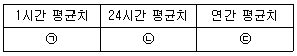
- ㉠ : 0.15 이하, ㉡ : 0.⑤ 이하, ㉢ : 0.02 이하
- ㉠ : 0.10 이하, ㉡ : 0.06 이하, ㉢ : 0.03 이하
- ㉠ : 0.15 이하, ㉡ : 0.06 이하, ㉢ : 0.03 이하
- ㉠ : 0.18 이하, ㉡ : 0.10 이하, ㉢ : 0.⑤ 이하
(정답률: 48%)
94. 독도 등 도서지역의 생태계 보전에 관한 특별법상 특정도서에서 입목ㆍ대나무의 벌채 또는 훼손한 자에 대한 벌칙기준으로 옳은 것은? (단, 군사ㆍ항해ㆍ조난구호행위 등 필요하다고 인정하는 행위 등은 제외)
- 6개월 이하의 징역 또는 5백만원 이하의 벌금
- 1년 이하의 징역 또는 1천만원 이하의 벌금
- 3년 이하의 징역 또는 3천만원 이하의 벌금
- 5년 이하의 징역 또는 5천만원 이하의 벌금
(정답률: 40%)
95. 국토의 계획 및 이용에 관한 법률상 개발행위허가 신청 시 첨부하여야 할 계획서의 내용에 해당하지 않는 것은?
- 경관 및 조경에 관한 계획
- 개발 이익 환원에 관한 계획
- 위해방지 및 환경오염방지 계획
- 기반시설의 설치나 그에 필요한 용지의 확보
(정답률: 62%)
96. 국토의 계획 및 이용에 관한 법률 시행령상 ()안에 들어갈 지구로서 가장 적합한 것은?
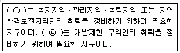
- ㉠ : 보전취락지구. ㉡ : 집단취락지구
- ㉠ : 보전취락지구. ㉡ : 개발취락지구
- ㉠ : 자연취락지구. ㉡ : 개발취락지구
- ㉠ : 자연취락지구. ㉡ : 집단취락지구
(정답률: 39%)
97. 환경부장관이 환경현황 조사를 의뢰하거나 환경정보망의 구축ㆍ운영을 위탁 할 수 있는 전문기관이 아닌 것은?
- 보건환경연구원
- 국립환경과학원
- 한국수자원공사
- 한국농어촌공사
(정답률: 63%)
98. 다음은 개발제한구역의 지정 및 관리에 관한 특별조치법 시행규칙상 개발제한구역에 골프장을 설치할 수 있는 토지의 입지기준이다. ()안에 알맞은 것은?
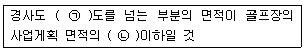
- ㉠ : 10, ㉡ : 100분의 25
- ㉠ : 10, ㉡ : 100분의 50
- ㉠ : 15, ㉡ : 100분의 25
- ㉠ : 15, ㉡ : 100분의 50
(정답률: 27%)
99. 국토의 계획 및 이용에 관한 법률에서 규정한 기반시설에 있어 공공공지가 속한 시설은?
- 공공ㆍ문화체육시설
- 공간시설
- 유통ㆍ공급시설
- 환경기초시설
(정답률: 26%)
100. 국토의 계획 및 이용에 관한 법률 시행령상 기반 시설 중 광장의 구분기준에 해당하지 않는 것은?
- 교통광장
- 일반광장
- 특수광장
- 건축물부설광장
(정답률: 56%)